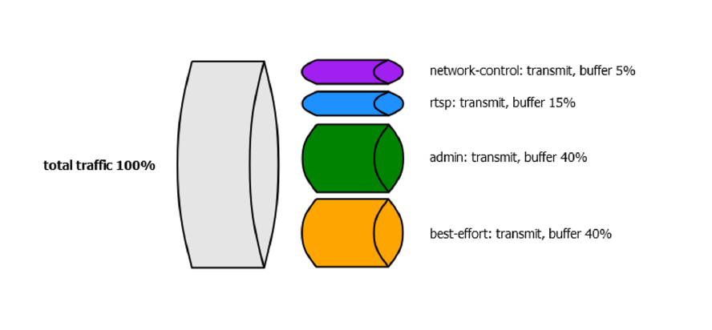

CoS - Class of Service
Definice front
# set class-of-service forwarding-classes queue 0 best-effort
# set class-of-service forwarding-classes queue 1 admin
# set class-of-service forwarding-classes queue 2 rtsp
# set class-of-service forwarding-classes queue 3 network-control
Schedulers

# set class-of-service schedulers best-effort-scheduler transmit-rate percent 15
# class-of-service schedulers best-effort-scheduler buffer-size percent 15
# set class-of-service schedulers best-effort-scheduler priority low
root# show class-of-service schedulers
best-effort-scheduler {
transmit-rate percent 40;
buffer-s ize percent 40;
priority low;
}
admin-scheduler {
transmit-rate percent 40;
buffer-size percent 40;
priority medium-low;
}
rtsp-scheduler {
trans mit-rate percent 15;
buffer-size percent 15;
priority high;
}
network-control-scheduler {
transmit-rate percent 5;
buffer-size percent 5;
priority medium-high;
}
Scheduler maps
# set class-of-service scheduler-maps my-sched-map forwarding-class best-effort scheduler best-effort-scheduler
root# show class-of-service scheduler-maps
my-sched-map {
forwarding-class best-effort scheduler best-effort-scheduler;
forwarding-class rtsp scheduler rtsp-scheduler;
forwarding-class admin scheduler admin-scheduler;
forwarding-class network-control scheduler network-control-scheduler;
}
Mapování Scheduler-maps na interface
# set class-of-service interfaces ge-0/0/0 scheduler-map my-sched-map
root# show class-of-service interfaces
ge-0/0/0 {
scheduler-map my-sched-map;
}
ge-0/0/1 {
scheduler-map my-sched-map;
}
Traffic marking (Firewall filters)
# set firewall family inet filter apply-cos-markings term admin from source-address x.x.x.x/x
# set firewall family inet filter apply-cos-markings term admin then forwarding-class admin
# set firewall family inet filter apply-cos-markings term admin then accept
root# show firewall
family inet {
filter apply-cos-markings {
term admin {
from {
source-address x.x.x.x/x
}
then {
forwarding-class admin;
accept;
}
}
term rtsp {
from {
protocol [ tcp udp ];
port 8554;
}
then {
forwarding-class rtsp;
accept;
}
}
term default {
then accept;
}
}
}
Aplikování firewall filtru na interface
# set interfaces ge-0/0/0.0 family inet filter input apply-cos-markings
root# show interfaces
ge-0/0/0 {
unit 0 {
family inet {
filter {
input apply-cos-markings;
}
address x.x.x.x/x;
}
}
}
Troubleshoot & Verification
> show interfaces queue ge-0/0/0